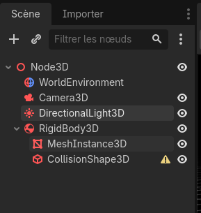
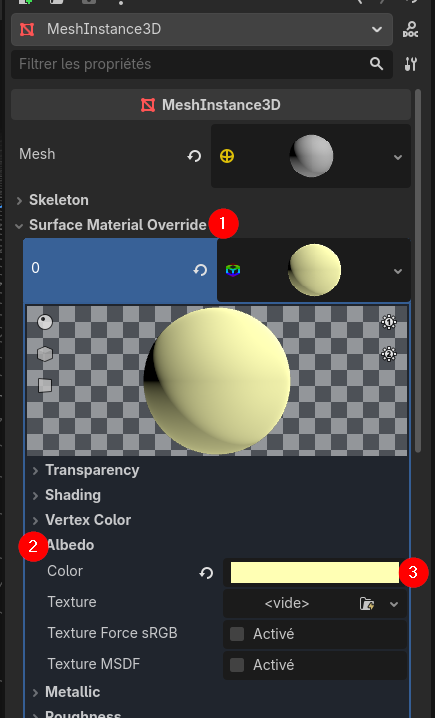
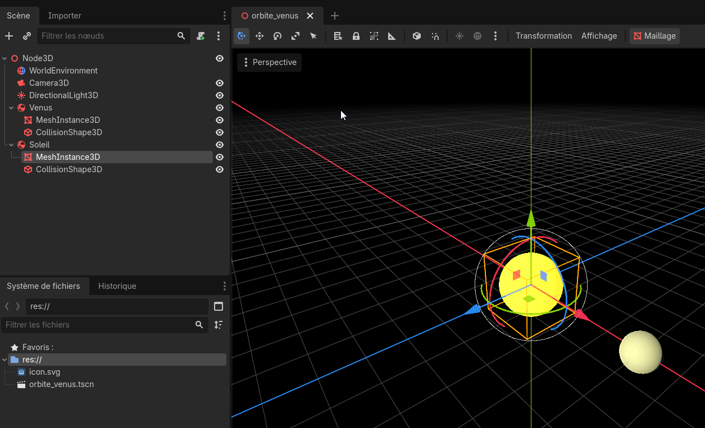
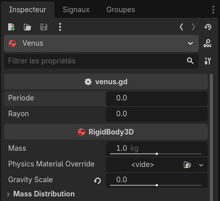

Exemple 1 : Orbite analytique et numérique de Vénus — Mouvement analytique de vénus
Contenus de la page
Utilisation d'un moteur de jeu
Temps requis
30 minutes
À propos de la page
{kind=link}
Dans cette section, nous ajouterons les éléments Vénus et Soleil à la scène et créerons un script pour gérer la rotation de Vénus.
Création des objets
Avant de coder le mouvement analytique de Vénus, il nous faudra créer ses objets. Le premier à créer est le RigidBody3D qui représente un objet qui a des caractéristiques physiques dans le cadre de la simulation. Nous exploiterons peu les éléments physiques du moteur de jeu, mais Godot peut avoir besoin de ce noeud dans ses opérations avec d'autres noeuds qui nous utiliseront. Ensuite, il faut ajouter deux noeuds enfants :
MeshInstance3Dqui est un représente les données d'une forme à afficher;CollisionShape3Dqui représente une zone de collision. Elle nous sera utile éventuellement pour traiter des éléments interactifs dans la simulation.
Nous renommerons le noeud parent comme Venus afin de pouvoir le repérer facilement dans la scène. Simplement cliquez sur le noeud, avec clic droit et renommer ou sélectionner le noeud et appuyer sur F2.
{kind=link}

Configuration du RigidBody3D
La seule configuration que nous allons enlever du RigidBody3D est l'utilisation de la gravité. Après tout, la simulation est dans l'espace et nous ne voulons pas que les objets tombent. Dans l'inspecteur, trouvez le paramètre Gravity Scale et ajustez sa valeur à 0.
Désactiver la gravité pour toute la simulation
Une alternative à la faire cette manipulation pour chaque objet est de se rendre dans le menu Projet > Paramètres du projet > Général > Physique > 3D et de changer Gravité par Défaut pour y mettre 0.
Nous en profiterons aussi pour placer Vénus à sa position initiale soit en (4; 0; 0). Il est important de manipuler le noeud parent, autrement nous aurons des problèmes plus tard avec le positionnement des objets.
Configuration du MeshInstance3D
Pour le champ Mesh dans l'inspecteur du MeshInstance3D, nous allons sélectioner le mesh de type Sphere Mesh. Vous devriez voir une sphère apparaître dans l'écran.
Un mesh définit seulement la géométrie de la forme. Un Material définit l'affichage de la forme. Par défaut, un Material gris est appliqué sur l'objet afin de le visualiser. Nous allons changer la couleur pour y mettre une couleur verte.
Dans le champ Surface Material Override nous allons cliquez sur Standard Material 3D, ce qui crée un nouveau Material. En cliquant sur la sphère qui est apparue (1), nous irons dans le sous-menu Albedo (2) et changer la Color (3) pour une teinte de jaunâtre assimilable à Vénus (rgb : 255, 255, 180).
{kind=link}

Configuration du CollisionShape3D
Pour le champ Shape dans l'inspecteur du CollisionShape3D, nous allons sélectioner la forme de type Sphere Shape 3D. Vous devriez voir une sphère bleue apparaître finement autour de Vénus. Il se peut que vous deviez zoomer beaucoup pour la voir.
Exercice 1
Ajoutez le Soleil au centre de la simulation. Modifiez son paramètre Scale dans la section Transform pour augmenter sa taille (deux fois plus gros que Vénus). Vous devez faire cette opération sur le MeshInstance3D et le CollisionShape3D.
Pour les personnes plus avancées, explorer les options du Material pour lui donner un aspect brillant.
Solution

{kind=link}
Ajouter un script pour faire tourner Vénus
Godot utilise un langage de programmation qui lui est propre, le GDScript. Toutefois, la syntaxe du GDScript est très proche de celle du Python, donc la plupart des opérations que nous avions l'habitude de faire en Python se feront presque de la même façon avec GDScript.
Donc, nous allons ajouter un script en utilisant clic droit sur le noeud Venus et sélectionner « Attacher un script ». On laisse les paramètres par défaut et on clique sur « Charger ».
Structure d'un script
| Script vide | |
|---|---|
Dans ce script, la ligne 1 indique que ce script est basé sur le modèle de RigidBody3D. Nous verrons plus tard les implications de cette ligne. Ensuite, deux fonctions sont déclarées. En GDScript, on utilise le mot clé func plutôt que def pour définir une fonction. Ces deux fonctions, qui commencent avec un trait de soulignement (underscore) sont appelées par la boucle de jeu.
Boucle de jeu
La boucle de jeu s'exécute à chaque écran (frame) et appelle certaines fonctions sur tous les noeuds du jeu. Ce sont grâce à ces fonctions que l'on peut mettre à jour l'état des objets de jeu et donner un aspect temps réel à un jeu.
La première fonction _ready() est appelée lorsque le noeud est positionné dans la scène pour la première fois. On y fait des opérations d'initialisation des objets dans la scène.
La seconde fonction _process(delta: float) est appelée à chaque écran du jeu. Elle permet de mettre à jour l'état d'un objet. Elle accepte un paramètre appelé delta qui est de type float. Nous verrons l'usage de ce paramètre plus loin.
Au niveau de la syntaxe, on remarque l'ajout de -> void après les fonctions. GDScript demande d'indiquer explicitement le type de retour de la fonction. Les deux fonctions retournent void, c'est-à-dire rien. On peut aussi remarquer que les fonctions contiennent une seule instruction pass. Il est interdit de déclarer des fonctions vides, donc l'utilisation de l'instruction pass permet simplement de ne rien faire et continuer l'exécution.
Orbite de Vénus
Donc pour afficher l'orbite de Vénus, nous allons utiliser la fonction _process pour mettre à jour sa position. Le paramètre delta nous indique combien de temps s'est écoulé depuis la dernier écran. Ce paramètre nous permettra donc de faire une mise à l'échelle au temps de la simulation.
Oui, mais en 60 FPS je pourrais simplement diviser par 60
Non, même si un jeu s'exécute en 60FPS, le temps de rendu de chaque écran varie. Coder une division par 60 entraînera des erreurs dans l'exécution.
Nous allons déclarer les variables suivantes :
- Période de rotation de Vénus (periode) : 5 secondes par tour
- Distance à l'origine (rayon) : 4 mètres
- Temps écoulé dans la simulation (temps) : 0 seconde
Pour déclarer une variable en GDScript, c'est comme en Python, mais il faut ajouter le mot-clé var devant la variable et après son indicateur ajouter : type. Les variables en GDScript doivent donc toujours contenir le même type de données.
Ensuite, nous allons mettre à jour le Transform de Venus pour inclure les nouvelles positions en x et en z. Attention, l'axe des y représente le mouvement vertical.
La formule sera la suivante :
extends RigidBody3D
var temps : float = 0.0
var periode : float = 5.0
var rayon : float = 4.0
# Called when the node enters the scene tree for the first time.
func _ready() -> void:
pass # Replace with function body.
# Called every frame. 'delta' is the elapsed time since the previous frame.
func _process(delta: float) -> void:
position = Vector3(
rayon * cos(2 * PI / periode * temps),
0.0,
rayon * sin(2 * PI / periode * temps)
)
temps += delta
Rendre le script robuste et modulaire
Deux choses doivent être faite pour rendre le script robuste et modulaire afin d'éviter les erreurs de dépassement et permettre sa réutilisation plus simplement.
Ajuster le temps
Dans ce script on accumule à l'infini le temps écoulé dans la variable temps, mais dans les faits on a besoin que du temps pour la période. À chaque tour on peut réinitialiser le temps. Les tours n'arriveront pas toujours « juste », donc on va vérifier simplement le dépassement d'un tour et après réinitialiser. Dans ce cas, cela arrive lorsque le temps devient plus grand que la période.
À la fin de process, on ajoute le code suivant :
Exposer les variables
Pour balancer la simulation, il est intéressant de rendre les variables accessibles directement dans l'inspecteur. Pour ce faire, on va ajouter la mention @export devant chacune des variables que l'on veut rendre accessible dans l'inspecteur. La variable temps est gérée à l'interne du script, on ne l'expose donc pas. Toutefois, pour rendre le code plus clair, on va déplacer son initialisation dans la fonction _ready.
var temps : float
@export var periode : float
@export var rayon : float
# Called when the node enters the scene tree for the first time.
func _ready() -> void:
temps = 0.0
{kind=link}

Il ne reste qu'à affecter les bonnes valeurs directement dans l'inspecteur et il sera possible de voir la simulation.
Exercice 2
- Ajouter la Terre à une orbite plus extérieure que celle de Vénus.
- [Exercice avancé] Ajouter une Lune qui doit cette fois-ci tourner autour de la Terre.
- [Exercice bonus] Travailler avec le noeud
OmniLight3Dpour gérer l'illumination de la scène plutôt qu'uneDirectionalLight3D.